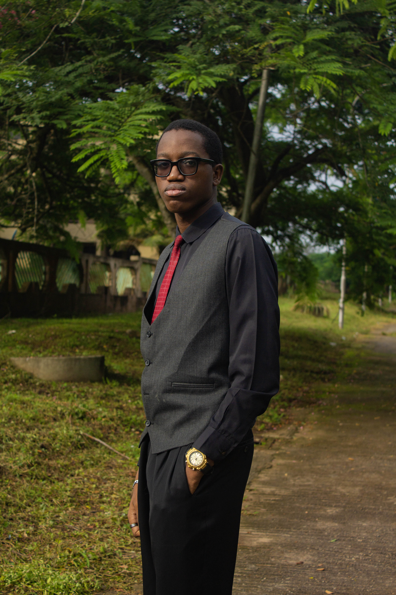

Hey there, My name's Ayoola Ayooluwakitan. I am based in Lagos, Nigeria. I'm a Web Developer who enjoys turning ideas into practical, well-designed digital experiences.
View my Online ResumeI'm interested in building websites and applications that don't just look good, but also help people accomplish something. Whether it's giving a business a professional online presence or creating an interactive application, I approach each project by thinking about what it needs to do and who it needs to serve.

My current work includes HTML, CSS, JavaScript, and Tailwind CSS. I also have experience exploring Python. I'm continually developing my skills through practical projects and experimentation.
I see development as a continuous learning process. Every project presents an opportunity to strengthen my existing skills, explore new ideas, and discover better ways to solve problems.
I'm focused on improving my JavaScript skills, building more interactive applications, and developing a stronger understanding of what makes websites useful, accessible, and reliable.
Outside development, I enjoy learning new things and exploring different interests. I'm naturally curious, and I like understanding how things work and finding ways to make ideas more practical.
I'm always looking for opportunities to learn, build, and work on interesting ideas.
Have an idea for a website? Or perhaps you have an existing website that needs improvement?
Tell me a little about what you're trying to achieve, and we can discuss the project, its requirements, and the next steps.
Let's discuss your project